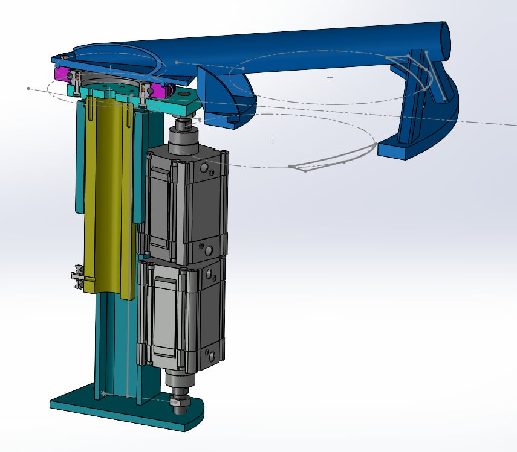

01
RÉTRO-INGÉNIERIE · COFICAB
Système de changement de bobine
Rétro-ingénierie du sous-ensemble mécanique SV402D à partir de pièces physiques et de plans scannés, suivie de la reconstruction de l'assemblage sous SolidWorks.